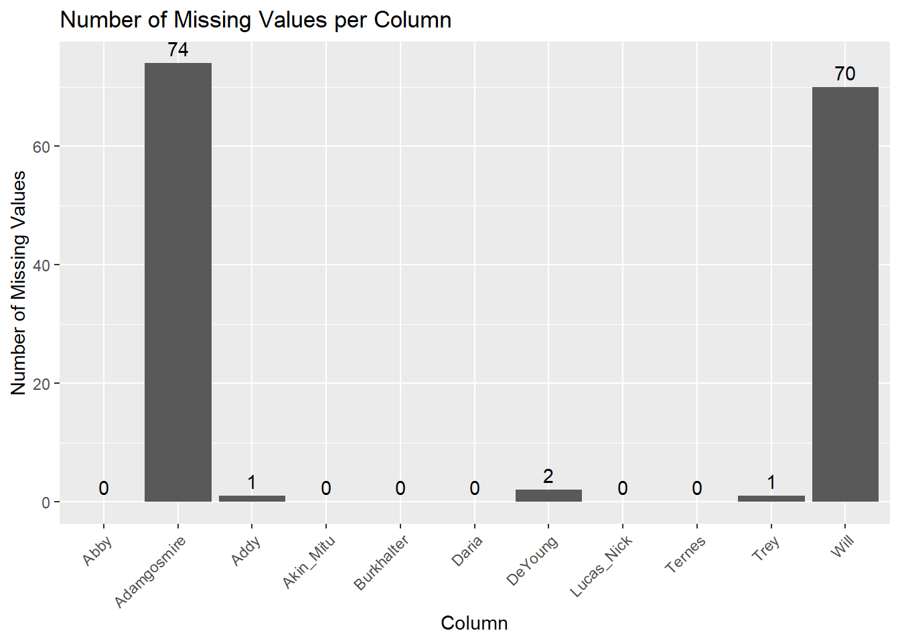

The files are cleaned to keep only two columns, id and the predictions.
# Load necessary librarieslibrary(dplyr)
Attaching package: 'dplyr'
The following objects are masked from 'package:stats':
filter, lag
The following objects are masked from 'package:base':
intersect, setdiff, setequal, union
# List all CSV files in the folderfile_paths <-list.files(path ="data/predictions", pattern ="*.csv", full.names =TRUE)# Initialize a list to store individual dataframesdf_list <-list()# Iterate through each filefor (i in1:length(file_paths)) {# Read the file into a dataframe temp_df <-read.csv(file_paths[i])# Extract the filename without the ".csv" extension file_name <- tools::file_path_sans_ext(basename(file_paths[i]))# Rename the second columncolnames(temp_df)[2] <- file_name# Store the dataframe in the list df_list[[i]] <- temp_df}# Merge all dataframes by the "id" columnmerged_df <-Reduce(function(x, y) {merge(x, y, by ="id", all =TRUE)}, df_list)# Print the merged dataframehead(merged_df)
# Load the ggplot2 librarylibrary(ggplot2)# Set the 'id' column as row namesrownames(merged_df) <- merged_df$idmerged_df$id <-NULLmerged_df$Addy <-as.numeric(merged_df$Addy)
Warning: NAs introduced by coercion
# Calculate the number of missing values for each columnmissing_counts <-sapply(merged_df, function(col) sum(is.na(col)))missing_data <-data.frame(column =names(missing_counts), missing_values = missing_counts)# Plot the missing values using ggplot2 with labels on topggplot(missing_data, aes(x = column, y = missing_values)) +geom_bar(stat ="identity") +geom_text(aes(label = missing_values), vjust =-0.5) +# This line adds labels on top of the barstheme(axis.text.x =element_text(angle =45, hjust =1)) +ggtitle("Number of Missing Values per Column") +xlab("Column") +ylab("Number of Missing Values")

# Impute missing values with the median of each columnmerged_df[] <-lapply(merged_df, function(col) {if(is.numeric(col)) { # Check if the column is numeric col[is.na(col)] <-median(col, na.rm =TRUE) # Replace NAs with median of the column }return(col)})# Print the imputed dataframehead(merged_df)
# Read the rent_data_test_original.csv filerent_data <-read.csv("data/rent_data_test_original.csv")# Treat the first column as row idrownames(rent_data) <- rent_data[,1]rent_data <- rent_data[,-1]# Merge with merged_df by row idpredictions <-merge(merged_df, rent_data, by ="row.names", all =TRUE)# Adjust column name from "Row.names" (default from merge function) to "id"colnames(predictions)[1] <-"id"# Print the predictions dataframesummary(predictions)
id Abby Adamgosmire Addy
Length:746 Min. : 4668 Min. : 1000 Min. : 2856
Class :AsIs 1st Qu.:11390 1st Qu.: 13000 1st Qu.: 11273
Mode :character Median :15472 Median : 21400 Median : 15253
Mean :21118 Mean : 47035 Mean : 24046
3rd Qu.:28733 3rd Qu.: 37000 3rd Qu.: 27079
Max. :56913 Max. :678000 Max. :158937
Akin_Mitu Burkhalter Daria DeYoung
Min. : 4894 Min. : 4728 Min. : 5066 Min. : 4859
1st Qu.: 11572 1st Qu.: 11474 1st Qu.: 11327 1st Qu.: 11443
Median : 16028 Median : 15686 Median : 15217 Median : 15678
Mean : 30248 Mean : 32439 Mean : 44415 Mean : 32147
3rd Qu.: 32352 3rd Qu.: 31563 3rd Qu.: 28398 3rd Qu.: 31871
Max. :362977 Max. :471865 Max. :7800742 Max. :604314
Lucas_Nick Ternes Trey Will
Min. : 4798 Min. : 4296 Min. : 4546 Min. : 4831
1st Qu.: 11630 1st Qu.: 11367 1st Qu.: 11382 1st Qu.: 13093
Median : 17860 Median : 15851 Median : 15610 Median : 17353
Mean : 35100 Mean : 32735 Mean : 32510 Mean : 24776
3rd Qu.: 36209 3rd Qu.: 31969 3rd Qu.: 32354 3rd Qu.: 30585
Max. :535546 Max. :576198 Max. :617771 Max. :211656
Posted.On BHK Size Floor
Length:746 Min. :1.000 Min. : 10 Length:746
Class :character 1st Qu.:2.000 1st Qu.: 600 Class :character
Mode :character Median :2.000 Median : 897 Mode :character
Mean :2.114 Mean :1002
3rd Qu.:3.000 3rd Qu.:1200
Max. :6.000 Max. :5700
Area.Type Area.Locality City Furnishing.Status
Length:746 Length:746 Length:746 Length:746
Class :character Class :character Class :character Class :character
Mode :character Mode :character Mode :character Mode :character
Tenant.Preferred Bathroom Point.of.Contact Rent
Length:746 Min. :1.000 Length:746 Min. : 3000
Class :character 1st Qu.:1.000 Class :character 1st Qu.: 10500
Mode :character Median :2.000 Mode :character Median : 16500
Mean :2.019 Mean : 34876
3rd Qu.:2.000 3rd Qu.: 32375
Max. :7.000 Max. :1200000
# Convert the 'id' column to integerspredictions$id <-as.integer(predictions$id)# Sort the dataframe by the 'id' columnpredictions <- predictions[order(predictions$id), ]# Treat the 'id' column as row namesrownames(predictions) <- predictions$idpredictions$id <-NULL# Print the updated predictions dataframehead(predictions)
Abby Adamgosmire Addy Akin_Mitu Burkhalter Daria DeYoung
1 6654.190 2000 4063.574 7208.543 5635.437 6013.168 5559.983
2 9416.986 7500 7588.085 7804.698 7967.955 8177.430 8637.214
3 21427.828 23400 30117.393 35167.498 28512.153 32472.980 33322.448
4 6923.165 6500 6654.740 6013.974 6037.676 6740.354 6145.523
5 14472.133 13400 14500.599 15334.362 14176.598 15224.278 15304.298
6 7721.697 7000 7399.056 7436.747 7674.476 7896.337 7966.902
Lucas_Nick Ternes Trey Will Posted.On BHK Size Floor
1 8727.071 5186.288 5503.072 5796.342 4/30/2022 1 50 4 out of 5
2 7098.692 9166.554 8433.726 8209.042 7/8/2022 1 500 2 out of 3
3 34186.359 35182.844 31953.163 30015.180 7/6/2022 1 450 4 out of 7
4 6418.290 5837.288 6132.790 6467.250 5/12/2022 1 400 1 out of 2
5 15112.547 15561.629 14551.820 15490.125 7/6/2022 2 1100 Ground out of 4
6 6831.864 8037.926 7987.693 8013.499 5/23/2022 1 400 3 out of 4
Area.Type Area.Locality City Furnishing.Status
1 Super Area Amberpet Hyderabad Unfurnished
2 Carpet Area Hsr Layout Sector 3, HSR Layout Bangalore Semi-Furnished
3 Carpet Area Charkop Sector 6 Mumbai Semi-Furnished
4 Super Area Meerpet Hyderabad Unfurnished
5 Super Area Nandanam Extension Chennai Semi-Furnished
6 Super Area Thammenahalli Apartmentge Bangalore Semi-Furnished
Tenant.Preferred Bathroom Point.of.Contact Rent
1 Bachelors/Family 1 Contact Owner 4500
2 Bachelors/Family 1 Contact Owner 15000
3 Family 2 Contact Agent 22000
4 Bachelors/Family 1 Contact Owner 6000
5 Bachelors/Family 2 Contact Owner 30000
6 Bachelors/Family 1 Contact Owner 6000
# Extract the first ten columns (predicted rents)predictions$Addy <-as.numeric(predictions$Addy)predicted_values <- predictions[, 1:10]# Calculate percent error for each predictionpercent_errors_data <-apply(predicted_values, 2, function(pred_column) {abs(pred_column - predictions$Rent) / predictions$Rent *100})# Convert the matrix to a data framepercent_errors <-as.data.frame(percent_errors_data)# Print the first few rows of the percent_errors dataframehead(percent_errors)
Abby Adamgosmire Addy Akin_Mitu
Min. : 0.08214 Min. : 0.00 Min. : 0.02436 Min. : 0.1968
1st Qu.: 12.13519 1st Qu.: 20.00 1st Qu.: 11.45648 1st Qu.: 11.8619
Median : 25.69718 Median : 45.00 Median : 26.08786 Median : 22.6038
Mean : 33.19317 Mean : 83.56 Mean : 31.46024 Mean : 31.1967
3rd Qu.: 45.83338 3rd Qu.: 81.42 3rd Qu.: 44.16052 3rd Qu.: 42.3113
Max. :264.22594 Max. :1300.00 Max. :273.66134 Max. :310.3780
Burkhalter Daria DeYoung Lucas_Nick
Min. : 0.05653 Min. : 0.0152 Min. : 0.0107 Min. : 0.0113
1st Qu.: 11.24634 1st Qu.: 11.2147 1st Qu.: 11.1263 1st Qu.: 12.0601
Median : 22.56528 Median : 24.2149 Median : 23.6056 Median : 25.8219
Mean : 30.94236 Mean : 31.6938 Mean : 32.3485 Mean : 37.6167
3rd Qu.: 41.09297 3rd Qu.: 40.7797 3rd Qu.: 41.2228 3rd Qu.: 46.2857
Max. :280.35908 Max. :550.0619 Max. :545.5116 Max. :695.9395
Ternes Trey
Min. : 0.13 Min. : 0.0108
1st Qu.: 10.73 1st Qu.: 11.0916
Median : 24.35 Median : 22.6004
Mean : 32.40 Mean : 31.8594
3rd Qu.: 41.03 3rd Qu.: 41.8772
Max. :573.92 Max. :503.6789
# Calculate the average of percent errors for each columnavg_errors <-sort(colMeans(percent_errors))avg_errors <-round(avg_errors, 2)print (avg_errors)